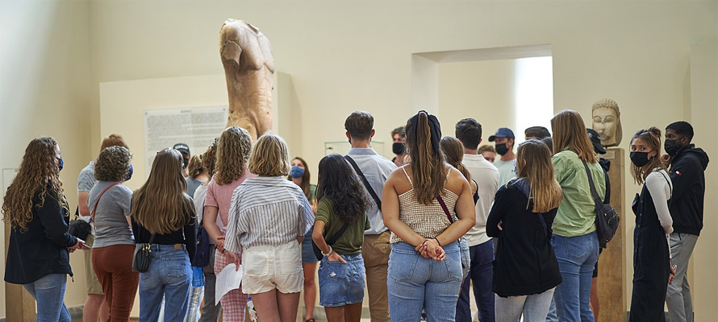
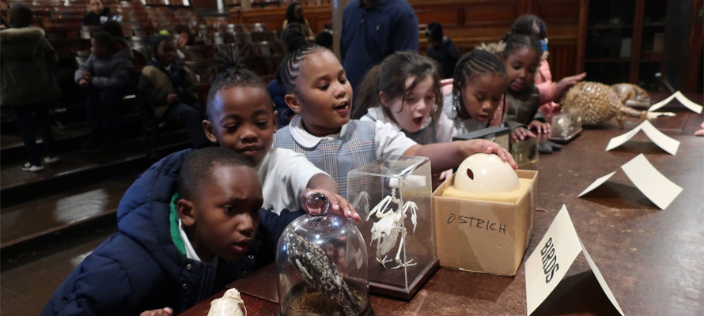

단체관람예약&안내
단체관람 안내 및 예약을 도와드리겠습니다.
예약안내
-
전시설명 예약안내
- 관람객의 이해를 돕기 위해 도슨트의 전시 설명 서비스를 제공합니다.
- 전시 설명을 원하시는 관람객은 최소 1주일 전까지 전화 예약하셔야 합니다.
- 스케줄 관계로 희망 시간에 예약을 못하는 경우가 생길 수 있습니다.
전시 설명 소요 시간기획전시 40분, 상설전시 1시간
전시 설명 예약 전화02-3277-4700
 -
단체관람예약 및 안내
info 예약자 및 인솔자 유의사항
- 학생 및 기관의 단체 관람은 관람일 1주일 전까지 홈페이지에서 예약하셔야 합니다.
- 예약을 하지 못한 경우에는 입장이 불가할 수도 있습니다.
- 단체 관람 시 교내에서 이동하실 때 면학 분위기를 해치지 않도록 유의하여 주십시오.
- 단체 관람 시 도시락을 지참하여 교내에서 식사하실 수 없습니다.
- 차량을 이용하여 방문하실 때는 홈페이지의 주차안내를 확인하여 주세요.
- 일회 단체관람 최대인원은 100명이고, 초과시에는 전화문의 바랍니다.(02-3277-4700)
- 전시설명 예약은 전화문의바랍니다.
- 전시활동지는 홈페이지에서 출력 가능합니다.
info 관람예절 안내
- 단체 인솔자께서는 예약 확인 후 관람 시 유의사항을 지도해 주시기 바랍니다.
- 음식물 반입과 안내견 이외의 애완동물의 출입은 금지되어 있습니다.
- 박물관에서는 정숙해 주시고 뛰어다니는 행위는 삼가시기 바랍니다.
- 전시물에 손을 대거나 손상을 입힐 수 있는 행위는 절대 삼가 주십시오.
- 플래시/삼각대 등을 이용한 촬영과 상업적 용도를 위한 촬영은 금지되어 있습니다.
- 박물관의 모든 공간은 금연구역입니다.
- 관람예절을 지키지 않아 타인의 관람에 피해를 주는 경우에는 관람을 제한할 수 있습니다.

교육안내
-
단체교육안내(유료) - 학교 수업, 자유학기제, 동아리 활동 가능
자연사박물관에서는 학생들이 과학기술을 경험하고 다양한 분야로 진학·진로를 설계할 수 있는 STEAM 아웃리치 프로그램을 개발하였습니다.
자연사박물관 전시장에서 여러 가지 활동(이론교육 + 전시관람 + 체험활동)을 하는 전시연계프로그램과 진로체험프로그램, 전시장에서 탐구할 수 있는 다양한 내용을 담아서 학교로 찾아가는 탐구체험프로그램이 있습니다.
모든 프로그램은 STEAM(Science, Technology, Engineering, Art, Mathematics)의 요소가 포함된 체험형 융합교육으로 제공됩니다.- 단체교육 대상초등학교 3~4학년, 초등학교 5~6학년, 중학생, 고등학생
- 가능 인원최대 30명까지(적정 인원 20명 내외)
-
1회 단체교육 수업료
120,000원(재료비 포함)120,000원+(1인당 재료비 2,000원 추가) ‘단풍나무에서 찾은 하늘을 나는 꿈’120,000원+(1인당 재료비 3,000원 추가) ‘날갯짓에서 찾은 하늘을 나는 꿈’ ‘불순물의 가치’
- 1회 단체교육 수업시간초등학교 3~4학년, 초등학교 5~6학년, 중학생, 고등학생
- 단체교육 대상2차시(초등학생 80분, 중학생 90분, 고등학생 100분 수업)
- 신청 문의이화여자대학교 자연사박물관(Tel : 02-3277-4700, e-mail : nhm@ewha.ac.kr)
-
운영프로그램
-
info STEAM 아웃리치 프로그램 안내 – 초등 3~4학년
유형/키워드/장소
프로그램명
차시
수업목표
전시연계/자연의 색/
(장소:자연사박물관)
식물의 색이 가진 비밀
2차시
1. 식물의 잎, 꽃, 열매가 가진 색의 다양성을 전시물을 통해 탐색해보고, 이러한 식물의 색이 가지는 역할에 대해 이해한다.
2. 조류를 색을 이용해 분류해본다.
3. 식물의 색을 관찰하고, 재구성하여 식물의 색의 역할을 이야기해본다.
동물의 색이 품은 이야기
2차시
1. 동물이 색이 그냥 생물에 있는 것이 아니라 여러 가지 이야기를 담고 있음을 알아본다.
2. 은폐색, 깜짝색, 혼인색 등을 이해한다.
3. 창의적 그림과 이야기로 학습개념을 구상할 수 있다.
진로체험/
(장소:자연사박물관)
자연사박물관 학예사 –
전시회를 기획해요
2차시
1. 식물과 동물을 분류할 수 있다.
2. 곤충, 어류, 조류를 구분할 수 있다.
3. 선택한 채집물의 이름을 말할 수 있다.
4. 자연사박물관 학예사가 하는 일을 이해할 수 있다.
탐구체험/
(장소:신청학교)
색이 들려주는 이야기
2차시
1. 동물의 색 변화의 예를 찾고, 그 이유에 대해 설명할 수 있다.
2. 학습한 개념을 하나의 창의적인 그림과 이야기로 구성할 수 있다.
3. 완성된 작품을 바탕으로 다양한 감성을 느낄 수 있다.
4. 조별 토의와 토론을 통해 협력적 과학 활동 능력을 키울 수 있다.
-
info STEAM 아웃리치 프로그램 안내 – 초등 5~6학년
유형/키워드/장소
프로그램명
차시
수업목표
전시연계/
자연의 형태/
(장소:자연사박물관)
식물이 이동한다
2차시
1. 식물의 생활사에서 식물의 이동이 가능한 시기와 그 역할을 이해한다.
2. 열매와 씨앗 형태의 다양성을 전시물을 통해 탐색하고 이동방법을 체험한다.
3. 식물의 이동에서 착안한 새로운 이동수단을 생각해본다.
척추동물의 이동과 사지골격
2차시
1. 척추동물의 이동(locomotion)과 여러 가지 유형의 사지(손발)구조를 탐색해본다.
2. 기능과 형태 간의 관계를 알고, 동물의 진화(상동구조)에 대해 이해할 수 있다.
3. 동물의 이동에서 착안한 새로운 인류 이동수단을 생각할 수 있다.
진로체험/
(장소:자연사박물관)
자연사박물관 학예사 – 전시회를 기획해요
2차시
1. 생물, 인간, 환경의 관계와 영향을 이해할 수 있다.
2. 주제를 정하고 짧은 글쓰기와 그림으로 주제를 표현할 수 있다.
3. 자연사박물관 학예사가 하는 일을 이해할 수 있다.
탐구체험/
(장소:신청학교)
자연이 선택한 대칭
2차시
1. 자연물에서 선대칭과 점대칭 구조를 찾을 수 있다.
2. 선대칭의 개념과 원리를 이해할 수 있다.
3. 점대칭의 개념과 원리를 이해할 수 있다.
4. 대칭의 원리를 이용하여 기부용품을 만들 수 있다.
-
info STEAM 아웃리치 프로그램 안내 – 중학생
유형/키워드/장소
프로그램명
차시
수업목표
전시연계/
생물모방/
(장소:자연사박물관)
자연 속 공학
2차시
1. 공학이란 무엇인지 생각해보고, 전시물에서 공학적으로 응용해 볼 수 있는 특징이 있는 생물들을 관찰하고 기록해 본다.
2. 실제 자연에 존재하는 구조색과 돌기구조가 공학적으로 응용된 사례를 배워보고, 이와 관련된 전시물을 찾아본다.
3. 연잎효과를 체험해보고, 이 효과를 응용할 수 있는 아이디어를 제시해 본다.
생물의 형태를 모방하라!
2차시
1. 생물의 형태에서 영감을 얻어 인류가 모방한 사례를 전시물에서 찾고 기록할 수 있다.
2. 조별 협업과 토의를 통해 생물에서 아이디어를 얻은 구조물을 제작할 수 있다.
진로체험/
(장소:자연사박물관)
자연사박물관 학예사 – 전시회를 기획해요
2차시
1. 자연사박물관 학예사가 하는 일을 이해할 수 있다.
2. 자연사박물관 전시물 구성을 통해 학예사 진로체험을 할 수 있다.
과학다큐멘터리 디렉터
2차시
1. 자연사박물관에서 다큐멘터리의 역할을 이해할 수 있다.
2. 시놉시스와 스토리보드를 활용하여 다큐멘터리의 주제를 표현할 수 있다.
3. 과학 다큐멘터리 감독이 하는 일을 이해할 수 있다.
탐구체험/
생명체에서 찾은 하늘을 나는 꿈/
(장소:신청학교)
단풍나무에서 찾은 하늘을 나는 꿈
2차시
1. 단풍나무 씨앗의 생식 원리를 모방한 프로펠러의 원리와 비행 특징을 이해할 수 있다.
2. 레오나르도 다빈치의 설계를 변형하여 다빈치 헬리콥터를 새롭게 제작할 수 있다.
날갯짓에서 찾은 하늘을 나는 꿈
2차시
1. 새와 곤충의 날갯짓을 통한 비행의 원리를 이해할 수 있다.
2. 새와 곤충을 모방한 생체 모방 날갯짓 비행체를 설계하여 제작할 수 있다.
-
info STEAM 아웃리치 프로그램 안내 – 고등학생
유형/키워드/장소
프로그램명
차시
수업목표
전시연계/광물/
(장소:자연사박물관)
불순물의 가치
2차시
1. 광물이 원소로 이루어져 있으며, 각각의 원소는 추출 및 제련되어 자원으로 활용될 수 있음을 설명할 수 있다.
2. 전시된 광물 표본을 조사하여 원소별 포함된 조암광물의 종류를 정리할 수 있다.
3. 다양한 보석광물을 관찰하고 색깔이 나타나는 원리를 추론할 수 있다.
4. 광물 자원의 소중함, 불순물의 가치를 느껴 표현할 수 있다.
진로체험/
(장소:자연사박물관)
과학다큐멘터리 디렉터
2차시
1. 자연사박물관에서 다큐멘터리의 역할을 이해할 수 있다.
2. 시놉시스와 스토리보드를 활용하여 다큐멘터리의 주제를 표현할 수 있다.
3. 과학 다큐멘터리 감독이 하는 일을 이해할 수 있다.
탐구체험
(학교 PC실 사용)
여전히 광물시대
2차시
1. 인류의 도구 사용과정을 이해하고 광물자원과의 관련성을 설명할 수 있다.
2. 광물자원의 재순환을 위한 도시광산을 이해하고 광물자원의 효율적인 이용을 추론할 수 있다.
3. 일상생활에서 버려지는 생활용품에 포함된 광물자원을 재활용하는 효율적 인 방법을 찾을 수 있다.
4. 광물자원을 효율적으로 재활용할 수 있는 순서도를 제작하면서 앱의 구성과 실행과정을 추론할 수 있다.
-